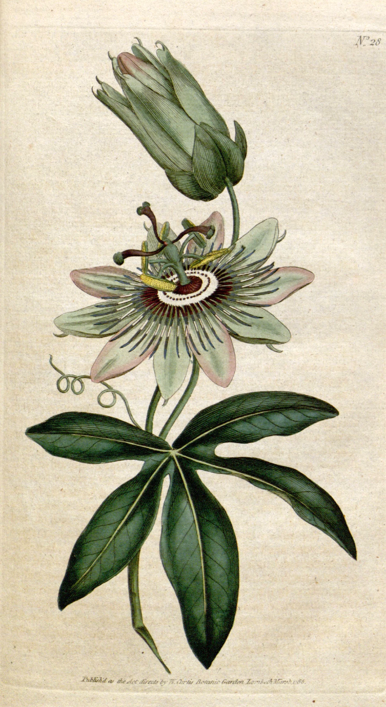
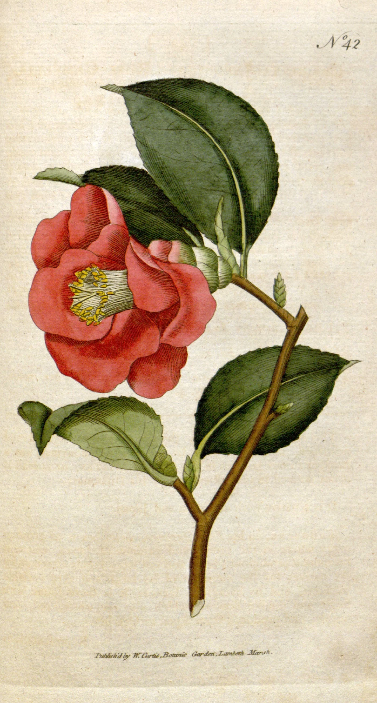
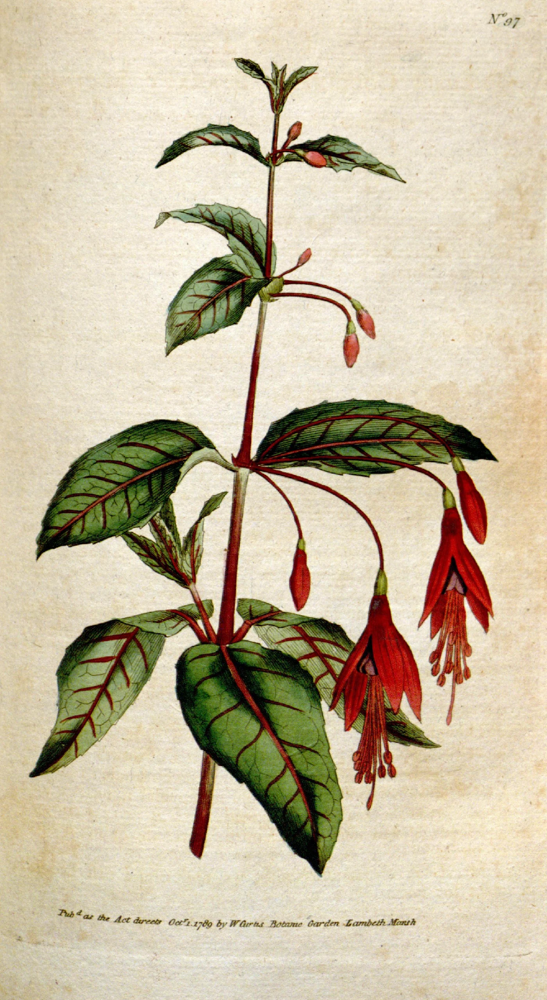
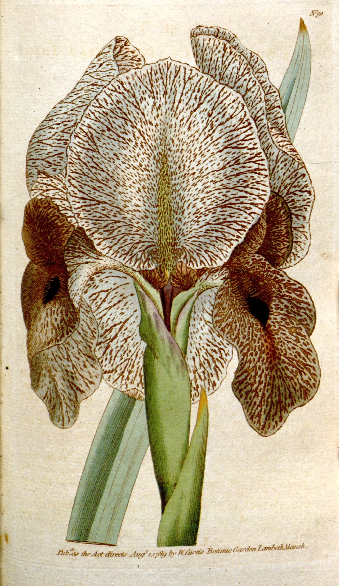
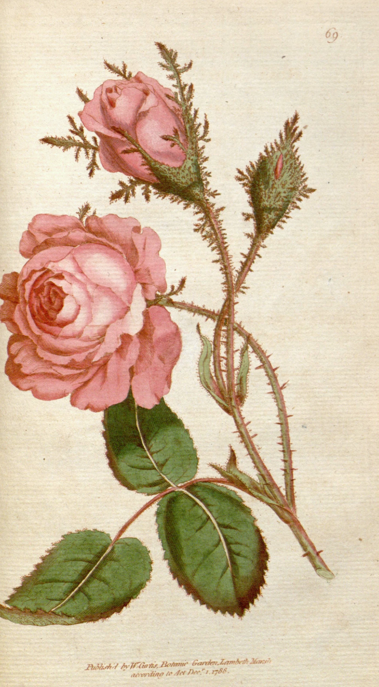
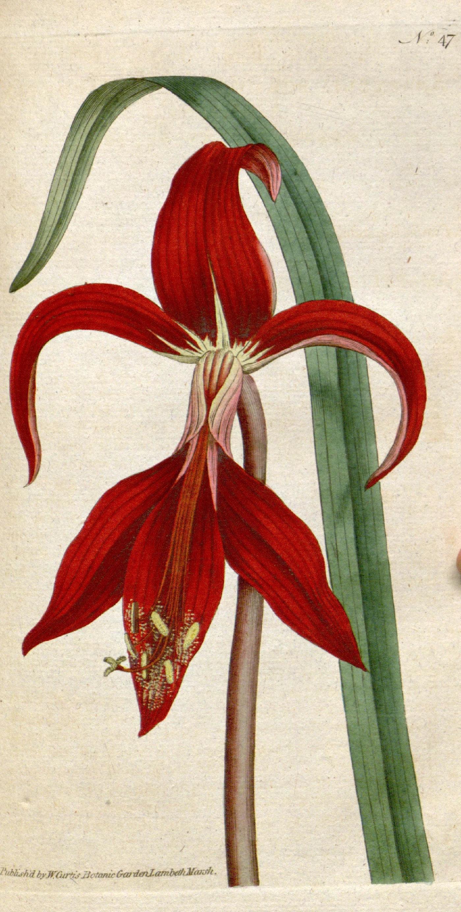
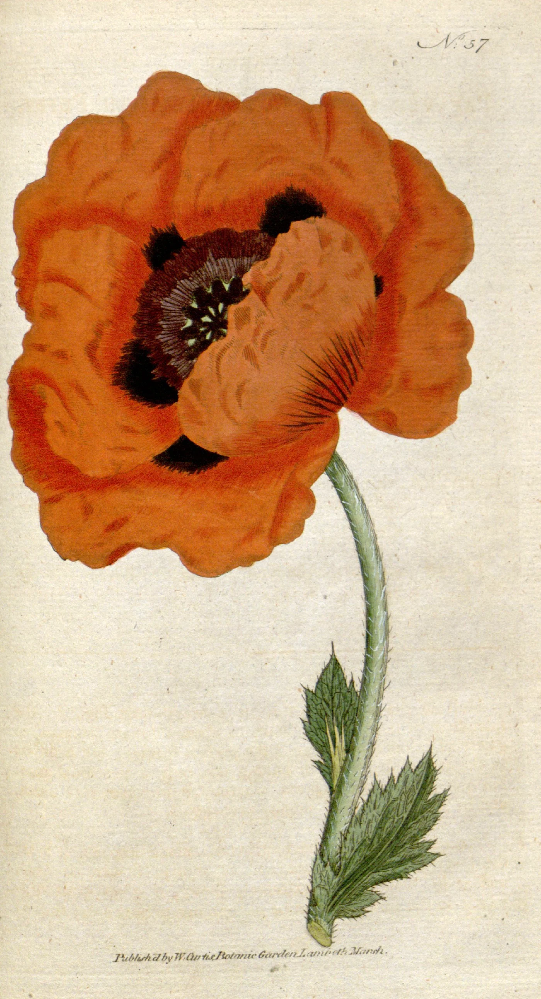

In February 1787 William Curtis, an apothecary who kept a botanic garden in the marshes at Lambeth, put out the first number of The Botanical Magazine: three plates of flowers and a page of text about each, stitched in a paper wrapper, for a shilling. His great work, the Flora Londinensis, had been admired and had lost him money. The magazine sold three thousand copies a month, and it was said of the two that one had brought him praise and the other pudding.
Every plate began as a drawing from a living plant, most of them in the first years by Sydenham Edwards, who was nineteen when his first was published and drew more than seventeen hundred in the next twenty-seven. The drawing was etched and engraved on a small copper plate, by Edwards himself at first and from 1792 by Francis Sansom, and printed in black on octavo sheets. Then each one had to be coloured. Three plates in three thousand copies is nine thousand sheets of watercolour a month, every one of them laid in by hand.







The colouring was done by a team, at one time some thirty of them, sitting side by side, many of them young women, some working in their own rooms and bringing the sheets back by the bundle. Each copied a pattern plate, one impression coloured as the artist meant it, kept on the table and followed sheet by sheet: the greens first, then the flower, then its small bright parts, a flat wash brought up to the engraved line and left to dry before the next went down beside it. They were paid by the piece, not by the hour, and not well, and the copies show it. Set two of the same plate side by side and one rose is pinker, one leaf a cooler green; here a wash has run over a stem, there a petal was missed and touched in afterwards.
The magazine outlived Curtis and every one of his artists. From 1834 Walter Hood Fitch, a calico designer’s apprentice from Glasgow, drew for it for more than forty years, some two thousand seven hundred plates, and drew them straight on the lithographic stone, which had taken over from copper by 1845. The prints were still coloured by hand, by colourists working from his patterns, for another century. It stopped only in 1948, when there were no longer enough people left who would do it, and the plates began to be printed in colour.